JTBD 1
When I’m buying items and managing my own listings at the same time, I want to keep track of each conversation and transaction, so I know what needs my attention and what to do next
Design a mobile marketplace MVP that connects finding items, creating listings, messaging, and checkout into a coherent experience, helping people move easily between buying and selling
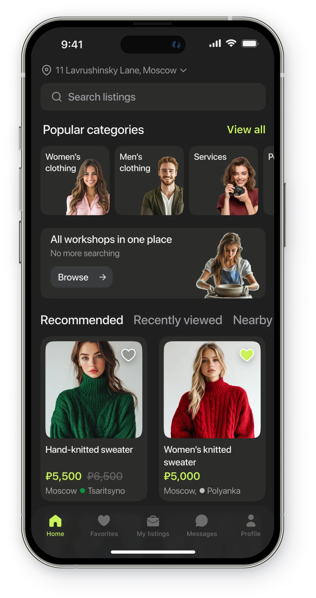
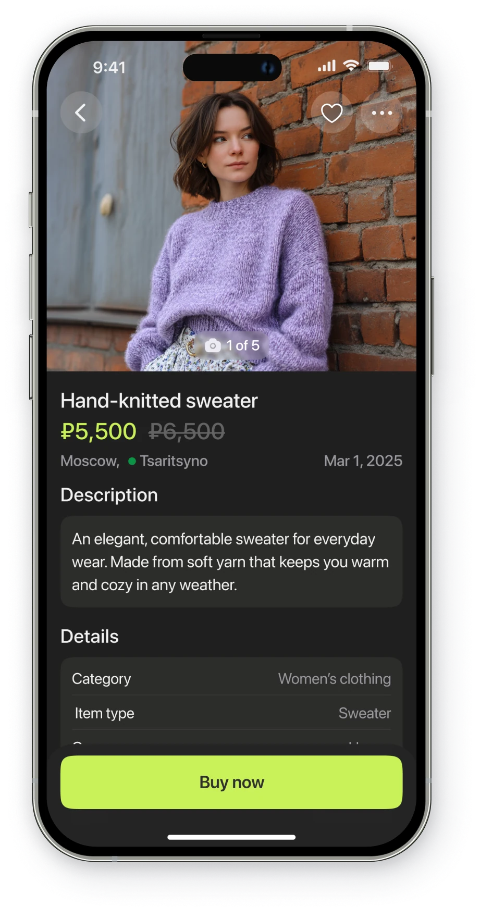
People who buy and sell on the same marketplace need to keep track of listings, conversations, and orders. When these activities feel disconnected, it becomes harder to maintain context and understand the next step toward completing a purchase or sale
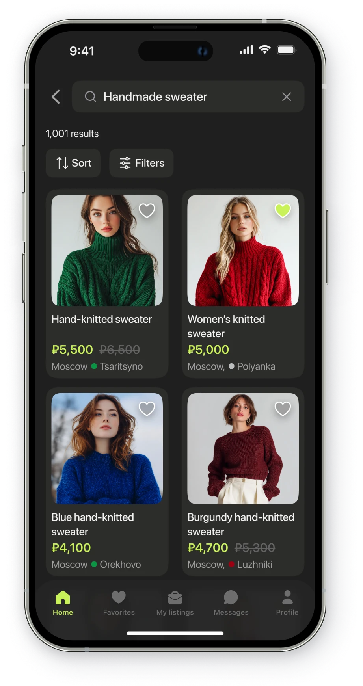
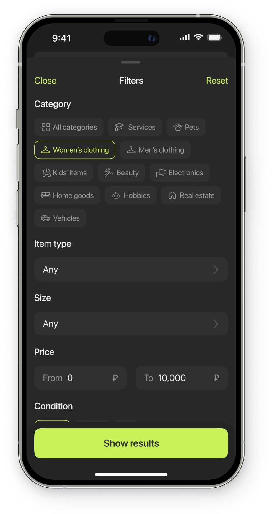
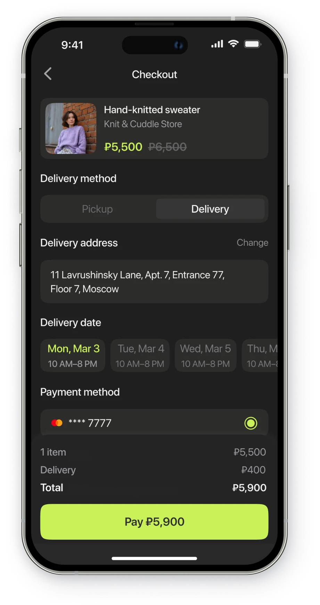
When I’m buying items and managing my own listings at the same time, I want to keep track of each conversation and transaction, so I know what needs my attention and what to do next
When I’m looking for a specific item or service, I want to narrow down the options to those that match my needs, so I can choose a suitable offer without sorting through irrelevant listings
When I have an item to sell or a service to offer, I want to clearly communicate what I’m offering and on what terms, so I can attract interested buyers and agree on a sale
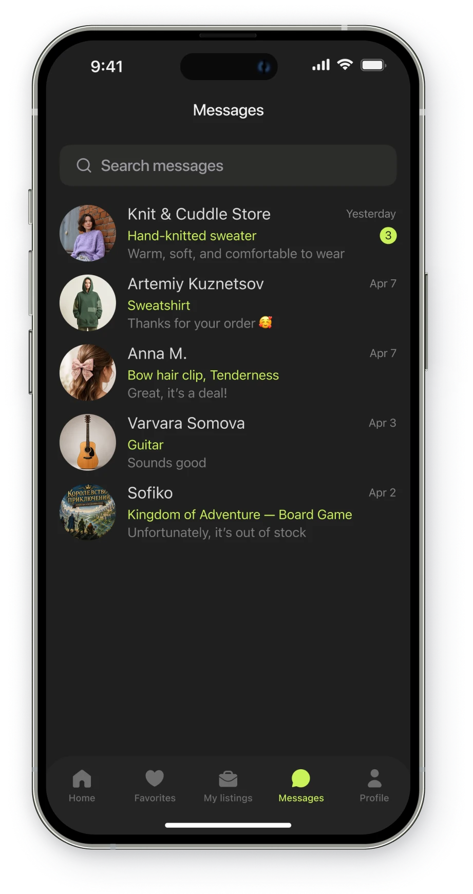
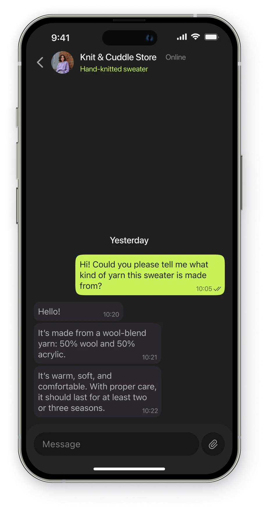
I compared how classifieds apps and marketplaces support finding items, creating listings, messaging, and checkout. The goal was to identify patterns that could help connect these activities into a coherent buying and selling experience in Atlas
If buyers can find nearby listings, they will be more likely to contact sellers because local pickup is easier
If buyers can read seller reviews, they will make more informed purchase decisions based on others’ experiences
If chats stay linked to listings, buyers and sellers will need fewer clarifications because the item is always clear
If recommendations match buyers’ interests, they will be more likely to explore listings because the offers are relevant
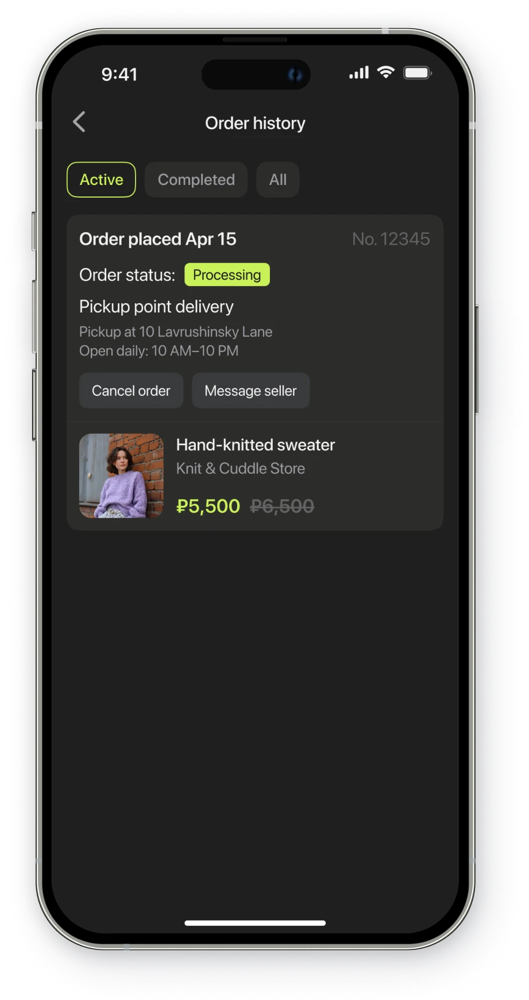
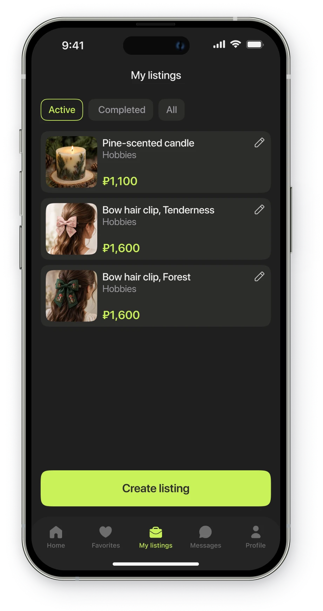
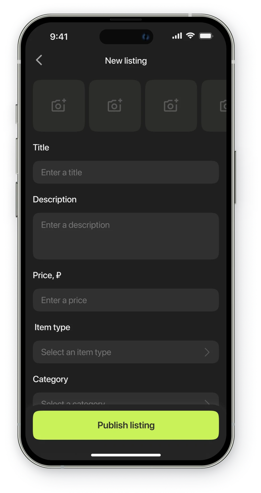
I mapped the app’s structure and key buying and selling scenarios to define how users find items, manage listings, communicate, and complete purchases
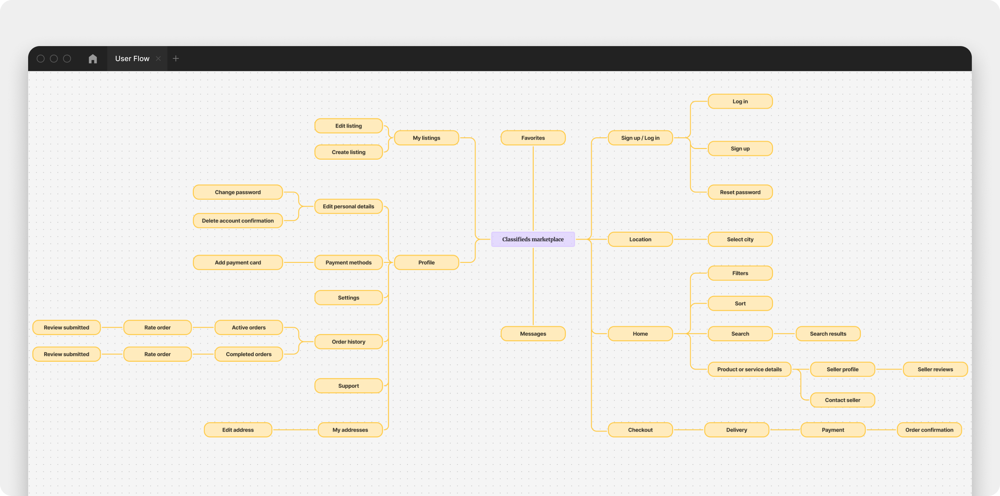
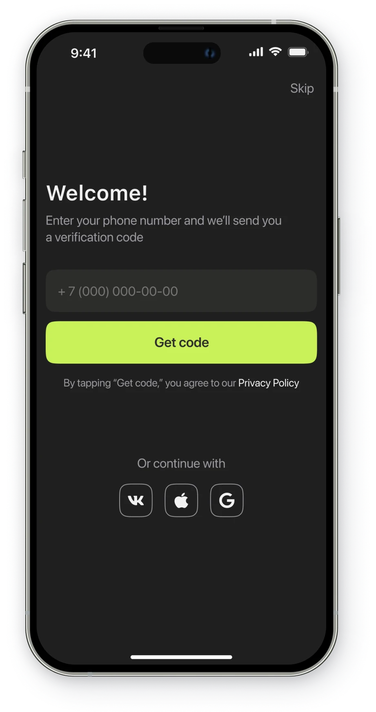
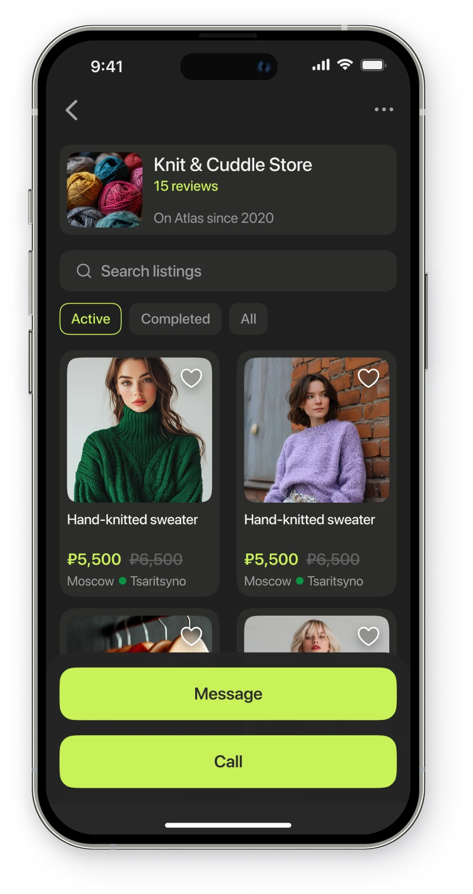
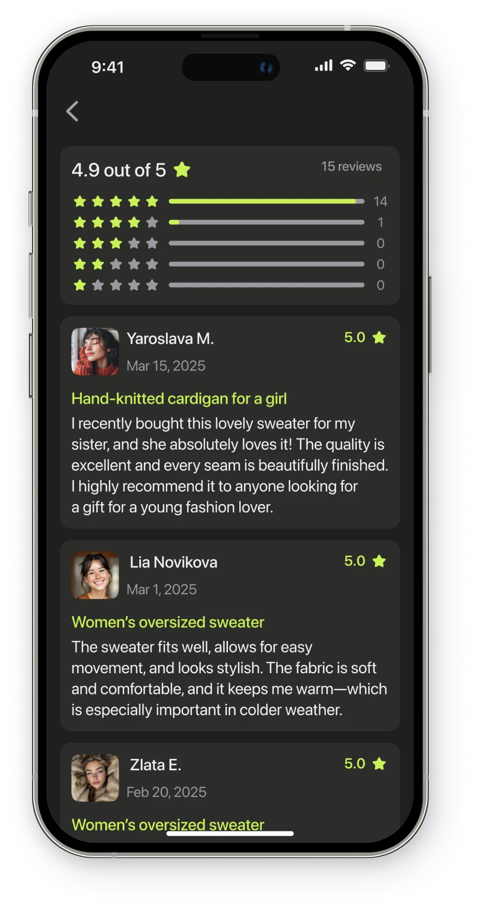
I designed a mobile marketplace MVP covering item discovery, listing creation, messaging, and checkout. Listing-linked conversations and dedicated views for orders and listings support both buying and selling while keeping transaction details in context